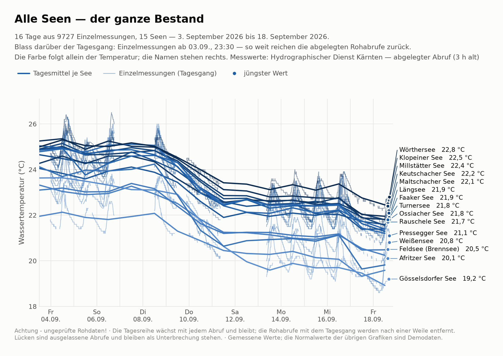
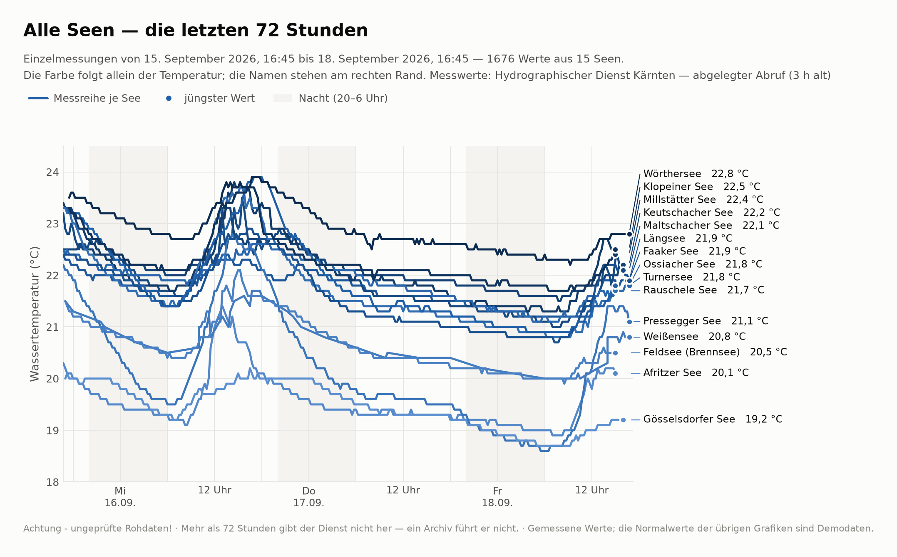
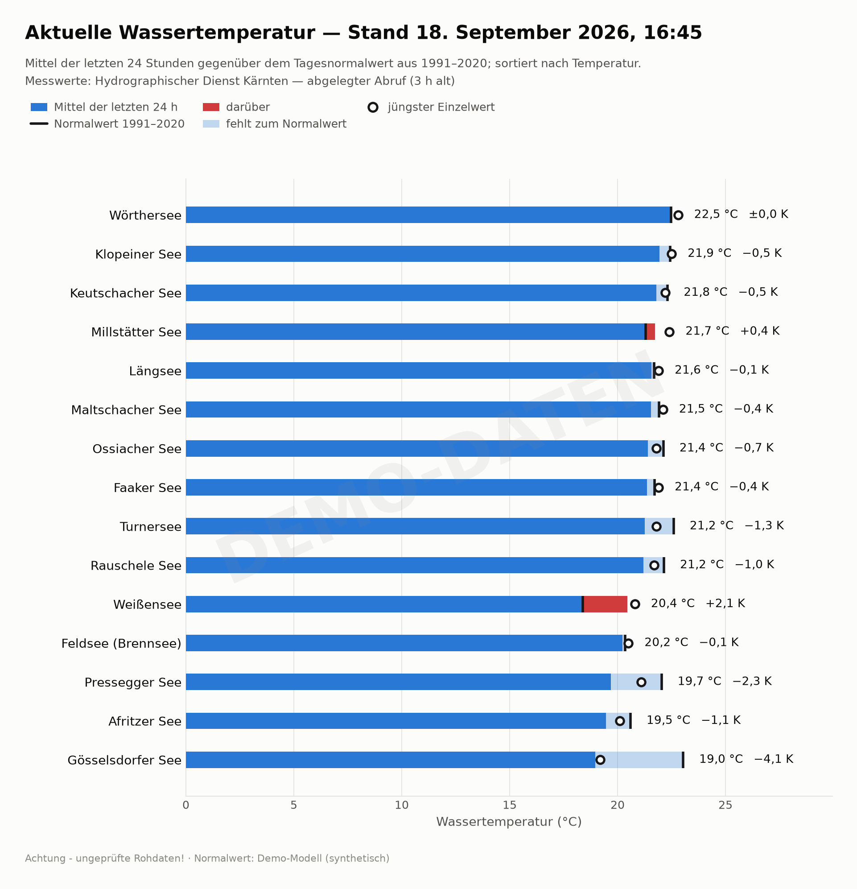
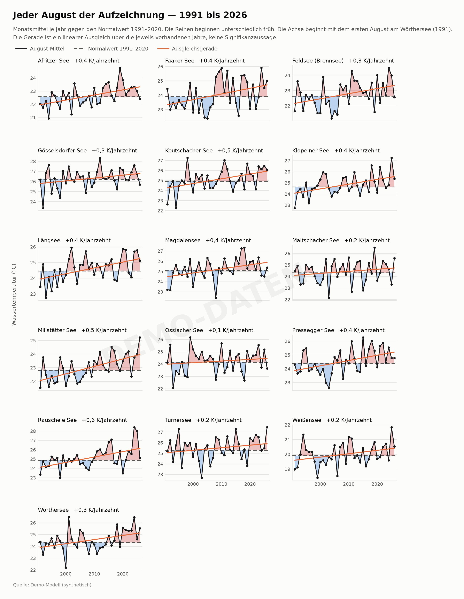

Kärntner Seen
Wie warm die Seen gerade sind — und wie das gegenüber dem langjährigen Mittel 1991–2020 dasteht.
ehyd starten.Wie warm ist es jetzt?
Der jüngste Messwert je See, dazu die Einordnung: wie das Tagesmittel gegen den Normalwert steht und ob es seit gestern steigt. Die kleine Linie ist der Verlauf der letzten drei Tage.
Stand Hydrographischer Dienst Kärnten — abgelegter AbrufAchtung - ungeprüfte Rohdaten!
Wörthersee
22,8°Cbadewarm- Abweichung
- ±0,0 K
- Trend
- −0,6 K
- Ø 24 h
- 22,5 °C
- Gemessen
- Fr 16:45
Klopeiner See
22,5°Cbadewarm- Abweichung
- −0,5 K
- Trend
- −0,7 K
- Ø 24 h
- 21,9 °C
- Gemessen
- Fr 15:00
Millstätter See
22,4°Cbadewarm- Abweichung
- +0,4 K
- Trend
- −0,8 K
- Ø 24 h
- 21,7 °C
- Gemessen
- Fr 15:00
Keutschacher See
22,2°Cbadewarm- Abweichung
- −0,5 K
- Trend
- −0,6 K
- Ø 24 h
- 21,8 °C
- Gemessen
- Fr 16:00
Maltschacher See
22,1°Cbadewarm- Abweichung
- −0,4 K
- Trend
- −0,9 K
- Ø 24 h
- 21,5 °C
- Gemessen
- Fr 16:00
Faaker See
21,9°Cfrisch- Abweichung
- −0,4 K
- Trend
- −0,5 K
- Ø 24 h
- 21,4 °C
- Gemessen
- Fr 16:45
Längsee
21,9°Cfrisch- Abweichung
- −0,1 K
- Trend
- −0,4 K
- Ø 24 h
- 21,6 °C
- Gemessen
- Fr 16:30
Ossiacher See
21,8°Cfrisch- Abweichung
- −0,7 K
- Trend
- −0,7 K
- Ø 24 h
- 21,4 °C
- Gemessen
- Fr 16:45
Turnersee
21,8°Cfrisch- Abweichung
- −1,3 K
- Trend
- −1,1 K
- Ø 24 h
- 21,2 °C
- Gemessen
- Fr 15:00
Rauschele See
21,7°Cfrisch- Abweichung
- −1,0 K
- Trend
- −1,1 K
- Ø 24 h
- 21,2 °C
- Gemessen
- Fr 15:00
Pressegger See
21,1°Cfrisch- Abweichung
- −2,3 K
- Trend
- −0,9 K
- Ø 24 h
- 19,7 °C
- Gemessen
- Fr 16:45
Weißensee
20,8°Cfrisch- Abweichung
- +2,1 K
- Trend
- −0,5 K
- Ø 24 h
- 20,4 °C
- Gemessen
- Fr 16:45
Feldsee (Brennsee)
20,5°Cfrisch- Abweichung
- −0,1 K
- Trend
- −0,9 K
- Ø 24 h
- 20,2 °C
- Gemessen
- Fr 15:00
Afritzer See
20,1°Cfrisch- Abweichung
- −1,1 K
- Trend
- −0,2 K
- Ø 24 h
- 19,5 °C
- Gemessen
- Fr 15:00
Gösselsdorfer See
19,2°Cfrisch- Abweichung
- −4,1 K
- Trend
- −0,8 K
- Ø 24 h
- 19,0 °C
- Gemessen
- Fr 16:00
badewarm ab 22 °C · frisch ab 18 °C · darunter kalt. Abweichung: das Mittel der letzten 24 Stunden gegen den Normalwert des Tages. Trend: dasselbe Mittel gegen das der 24 Stunden davor — so bleibt der Tagesgang aussen vor. Der Stern merkt einen See auf diesem Gerät als Favorit.
Alle Werte als Tabelle
| See | jetzt | Ø 24 h | gegen Normalwert |
|---|---|---|---|
| Wörthersee | 22,8 °C | 22,5 °C | −0,0 K |
| Klopeiner See | 22,5 °C | 21,9 °C | −0,5 K |
| Keutschacher See | 22,2 °C | 21,8 °C | −0,5 K |
| Millstätter See | 22,4 °C | 21,7 °C | +0,4 K |
| Längsee | 21,9 °C | 21,6 °C | −0,1 K |
| Maltschacher See | 22,1 °C | 21,5 °C | −0,4 K |
| Ossiacher See | 21,8 °C | 21,4 °C | −0,7 K |
| Faaker See | 21,9 °C | 21,4 °C | −0,4 K |
| Turnersee | 21,8 °C | 21,2 °C | −1,3 K |
| Rauschele See | 21,7 °C | 21,2 °C | −1,0 K |
| Weißensee | 20,8 °C | 20,4 °C | +2,1 K |
| Feldsee (Brennsee) | 20,5 °C | 20,2 °C | −0,1 K |
| Pressegger See | 21,1 °C | 19,7 °C | −2,3 K |
| Afritzer See | 20,1 °C | 19,5 °C | −1,1 K |
| Gösselsdorfer See | 19,2 °C | 19,0 °C | −4,1 K |
Stand 2026-09-18 16:45 · Hydrographischer Dienst Kärnten — abgelegter Abruf (3 h alt) · Achtung - ungeprüfte Rohdaten!
Verlauf
Die letzten drei Tage in Einzelmessungen — oder alles, was seit dem ersten Abruf abgelegt wurde, als Tagesmittel. Einen See antippen hebt ihn hervor und zeigt seinen Normalwert; über die Linien fahren oder tippen zeigt den Wert.
Die Bilder dazu — zum Speichern und Teilen
Alles, was gemessen wurde
Jeder Tag, den wir haben: das Tagesmittel je See über den ganzen Bestand, dazu -- blasser -- die Einzelmessungen der jüngsten Tage. Die Reihe wächst mit jedem abgelegten Abruf.
{kind=link}

Die letzten 72 Stunden
Alle Seen in Einzelmessungen -- wo es gerade warm ist und wie der Tagesgang verläuft. Mehr als drei Tage gibt der Dienst nicht her.
{kind=link}

Gegen den Normalwert
Heute gegen den Normalwert
Gemessener Wert je See gegenüber seinem Normalwert.

Jeder August der Aufzeichnung
Das August-Mittel jedes Jahres gegen den Normalwert desselben Monats.

2026 in Tageswerten
Was heuer gemessen wurde, Tag für Tag gegen den Monatsnormalwert. Die Reihe wächst mit jedem abgelegten Abruf. Einen See antippen klappt sein Bild auf.
Wörthersee22,8 °C±0,0 K
{kind=link}
Ossiacher See21,8 °C−0,7 K
{kind=link}
Millstätter See22,4 °C+0,4 K
{kind=link}
Faaker See21,9 °C−0,4 K
{kind=link}
Klopeiner See22,5 °C−0,5 K
{kind=link}
Weißensee20,8 °C+2,1 K
{kind=link}
Keutschacher See22,2 °C−0,5 K
{kind=link}
Längsee21,9 °C−0,1 K
{kind=link}
Turnersee21,8 °C−1,3 K
{kind=link}
Pressegger See21,1 °C−2,3 K
{kind=link}
Afritzer See20,1 °C−1,1 K
{kind=link}
Feldsee (Brennsee)20,5 °C−0,1 K
{kind=link}
Gösselsdorfer See19,2 °C−4,1 K
{kind=link}
Maltschacher See22,1 °C−0,4 K
{kind=link}
Rauschele See21,7 °C−1,0 K
{kind=link}
Die amtliche Reihe bis 2026
Ab hier die langjährigen Messreihen: sie enden mit dem letzten Jahrbuch (2026-09-18), Vergleichsjahr ist 2026. Das laufende Jahr steht nicht in ihnen — es steht oben.
Alle Seen im Vergleich
Mittlere Abweichung der Badesaison vom langjährigen Normalwert.

Monat für Monat
Wo im Jahr die Abweichung entstanden ist -- je See und Monat.

Badetage
Wie viele Tage warm genug waren, gemessen am langjährigen Mittel.

Jeder Sommer seit Reihenbeginn
Ein Balken je Jahr und See -- der lange Blick auf die Entwicklung.

Jahresgang je See 2026
Der Verlauf des Jahres gegen den Normalwert, das Band zeigt die Bandbreite des Bezugszeitraums.
Wörthersee

Ossiacher See

Millstätter See

Faaker See

Klopeiner See

Weißensee

Keutschacher See

Längsee

Turnersee

Pressegger See

Afritzer See

Feldsee (Brennsee)

Gösselsdorfer See

Maltschacher See

Rauschele See

Magdalensee

Grundlage der Normalwerte
Wie viele Jahre zum Vergleichswert je See beitragen. Die WMO-Normalperiode umfasst dreissig.
| See | Jahre | Zeitraum |
|---|---|---|
| Wörthersee | 30 | 1991–2020 |
| Ossiacher See | 30 | 1991–2020 |
| Millstätter See | 30 | 1991–2020 |
| Faaker See | 30 | 1991–2020 |
| Klopeiner See | 30 | 1991–2020 |
| Weißensee | 30 | 1991–2020 |
| Keutschacher See | 30 | 1991–2020 |
| Längsee | 30 | 1991–2020 |
| Turnersee | 30 | 1991–2020 |
| Pressegger See | 30 | 1991–2020 |
| Afritzer See | 30 | 1991–2020 |
| Feldsee (Brennsee) | 30 | 1991–2020 |
| Gösselsdorfer See | 30 | 1991–2020 |
| Maltschacher See | 30 | 1991–2020 |
| Rauschele See | 30 | 1991–2020 |
| Magdalensee | 30 | 1991–2020 |